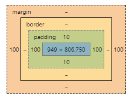

Website Wishlist
In viewing other website designs, it gives a really interesting insight into how many different ways there are to display information. But even more facinating is the number of different ways that people design the features in the back end, for what may appear to be very similar features from a user's perspective.
Some items for my wishlist at this point are:
- Links to other pages that appear to be 3D buttons
- Shapes/design in header that appears to spill out over the heading box (e.g. Zen Garden - "Like the Sea")
- Fixed header and navigation sections, so that these are always visible to the user
- A progress bar showing how far down the page the user is. I'm not sure how practical or useful this last one is, but it seems like a fun feature!
Can you think of an analogy to describe HTML, CSS and the DOM? How would you describe it to your non-technical friend?
The house analogy is used a lot because it's such a good one!
- HTML is the plan for the structure of the house - the foundations, frames, walls, roof, layout of the rooms, where are the doors, windows.
- CSS is then the plan for that details the decoration for the house - colour of the paint, wallpaper, curtains, carpet.
- DOM (document object model) then takes these plans and brings them to life.
I find this analogy really helpful when considering how to approach the design of the code itself. As with designing a house, you need to take into account that people make come and go at different stages of the build - making their own additions or needing to interpret your design. So, it's helpful to keep the code as simple and consistent as possible. Also, keep in mind that you may want to make changes in the future. Is the design flexible enough that it can be modified efficiently? Or is it filled with bespoke one-off features and dependencies that may not be obvious?
What is meant by boxifying design?
This is the process of taking a design for a site and then breaking it down into boxes to understand how translate this into HTML code. This will usually consist of the higher level boxes (e.g. header, content, navigation, footer), with a series of boxes within these (e.g. divisions, paragraphs, headings, text, images). This hierarchy of boxes then become the underlying HTML structure of a site.
There are a number of ways that people may complete a boxify design, including printing out a design and cutting it up with scissors, sketching the boxes up with pen/paper or using drawing boxes directly on the design (either on a print out or on screen).
What is the box model?
Each box referenced above consists of 4x elements - content, padding, border and margin. Each of these have dimensions that can be adjusted to change the look/layout of the site,
